Code

plantecophys模拟之前的部分模型全部为关于 C3 植物的拟合，而plantecophys则是使用 Caemmerer (2000) 的方法，则是针对 C4 植物的 A-Ci 曲线进行模拟。
AciC4(Ci, PPFD = 1500, Tleaf = 25, VPMAX25 = 120,
JMAX25 = 400, Vcmax = 60, Vpr = 80,
alpha = 0, gbs = 0.003, O2 = 210,
x = 0.4, THETA = 0.7, Q10 = 2.3,
RD0 = 1, RTEMP = 25, TBELOW = 0,
DAYRESP = 1, Q10F = 2, FRM = 0.5, ...)参数详解
以上参数均来自 Caemmerer (2000)，括号中的参数值均为默认值，具体应用时请按照实际情况修改。
目前无法利用该函数来拟合观测到数据。
下面的内容使用玉米的数据进行示例演示：
library('PhotoGEA')
library(lattice)
# 列出完整的数据目录
files = list.files('./data/C4-CORN', full.names = TRUE)
files #展示一下使用的数据[1] "./data/C4-CORN/2023-08-06-0840_ec-1.xlsx"
[2] "./data/C4-CORN/2023-08-06-0926_ck-1.xlsx"
[3] "./data/C4-CORN/2023-08-06-1005_ck-2.xlsx"# 读取目录里的数据
licor_exdf_list = lapply(files, function(fpath) {
read_gasex_file(fpath, 'time')
})
# 检查共有的表头文件，如果没更改设置，一台光合仪不会不同的
columns_to_keep = do.call(identify_common_columns, licor_exdf_list)
# 同上，该步骤基本无用，不过用了安全
licor_exdf_list = lapply(licor_exdf_list, function(x) {
x[ , columns_to_keep, TRUE]
})
# 按行合并数据
licor_data = do.call(rbind, licor_exdf_list)
# Create a new identifier column formatted like `instrument - species - plot`
# licor_data[ , 'curve_identifier'] =
# paste(licor_data[ , 'instrument'], '-', licor_data[ , 'species'], '-', licor_data[ , 'plot'])
# 这一步修改了源代码，因为这里作者使用了 user constant 功能
# 数据存储的时候多了上面 instrument speices等列，
# 我拿到的数据没有使用这个功能，这里呢我手动在excel内添加了，
# 因为数据里有个 newDef_0 列是空的，例如数据 ck1，我将空白
# 单元格全部改为了ck1，以便区分不同的excel表的数据
licor_data[ , 'curve_identifier'] =
paste0(licor_data[ , 'newDef_0'], '-','corn' )
# 检查数据点的数量是不是都是14个（我拿到的数据的个数，非强制）
check_licor_data(licor_data, 'curve_identifier', 14, 'CO2_r_sp')
# 因为测量顺序的原因，这种线看上去有点奇怪，但只是因为CO2测量点顺序的原因，
# 检查如无异常，那么这个数据就可以进行下一步了，无需进行后面的数据删除点操作
# 看上去这个测量比较不错
xyplot(
A ~ Ci | curve_identifier,
data = licor_data$main_data,
type = 'b',
pch = 16,
auto = TRUE,
grid = TRUE,
xlab = paste('Intercellular CO2 concentration [', licor_data$units$Ci, ']'),
ylab = paste('Net CO2 assimilation rate [', licor_data$units$A, ']')
)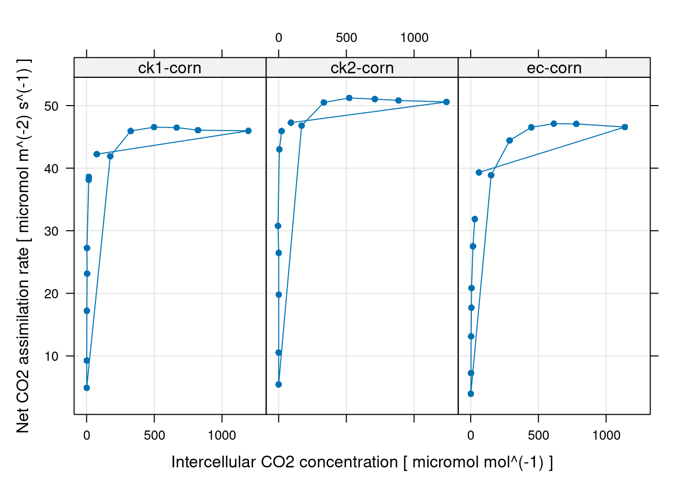
# 不删除数据无需运行数据删除的代码
# licor_data <- organize_response_curve_data(
# licor_data,
# 'curve_identifier',
# c(9, 10),
# 'Ci'
# )
# 也就不需要再检查一遍了
# xyplot(
# A ~ Ci | curve_identifier,
# data = licor_data$main_data,
# type = 'b',
# pch = 16,
# auto = TRUE,
# grid = TRUE,
# xlab = paste('Intercellular CO2 concentration [', licor_data$units$Ci, ']'),
# ylab = paste('Net CO2 assimilation rate [', licor_data$units$A, ']')
# )
# 这里检查一下水分控制情况，属于额外的信息确认
# 如果使用过程中正常控制，且无异常发生，那么可以不做
# 这里看上去挺稳定的
xyplot(
RHcham + `Humidifier_%` + `Desiccant_%` ~ Ci | curve_identifier,
data = licor_data$main_data,
type = 'b',
pch = 16,
auto = TRUE,
grid = TRUE,
ylim = c(0, 100),
xlab = paste('Intercellular CO2 concentration [', licor_data$units$Ci, ']')
)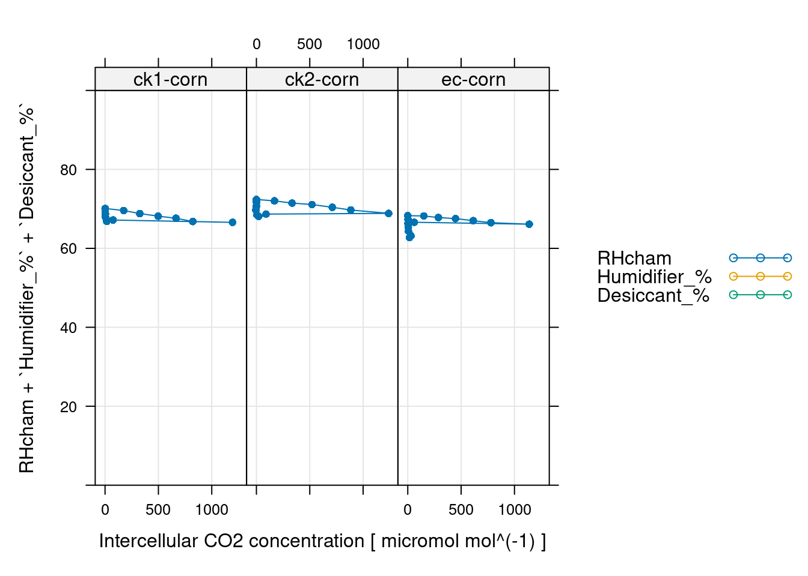
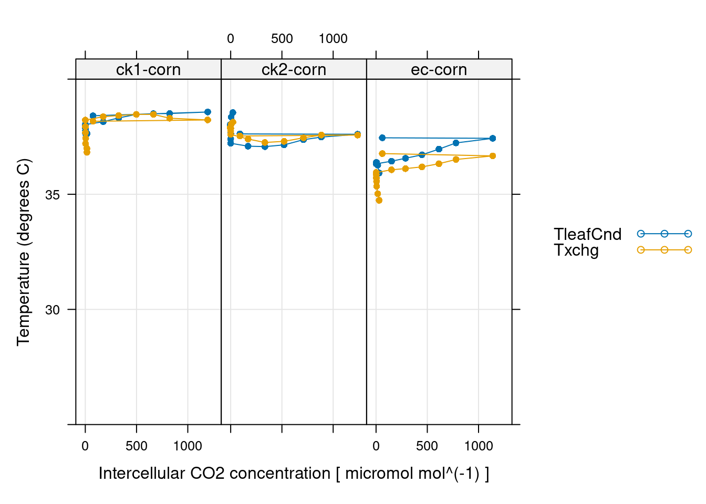
# 同上 CO2 控制，应该是最不可能出问题的，不然实验没法做
xyplot(
CO2_s + CO2_r + CO2_r_sp ~ Ci | curve_identifier,
data = licor_data$main_data,
type = 'b',
pch = 16,
auto = TRUE,
grid = TRUE,
xlab = paste('Intercellular CO2 concentration [', licor_data$units$Ci, ']'),
ylab = paste0('CO2 concentration (', licor_data$units$CO2_r, ')')
)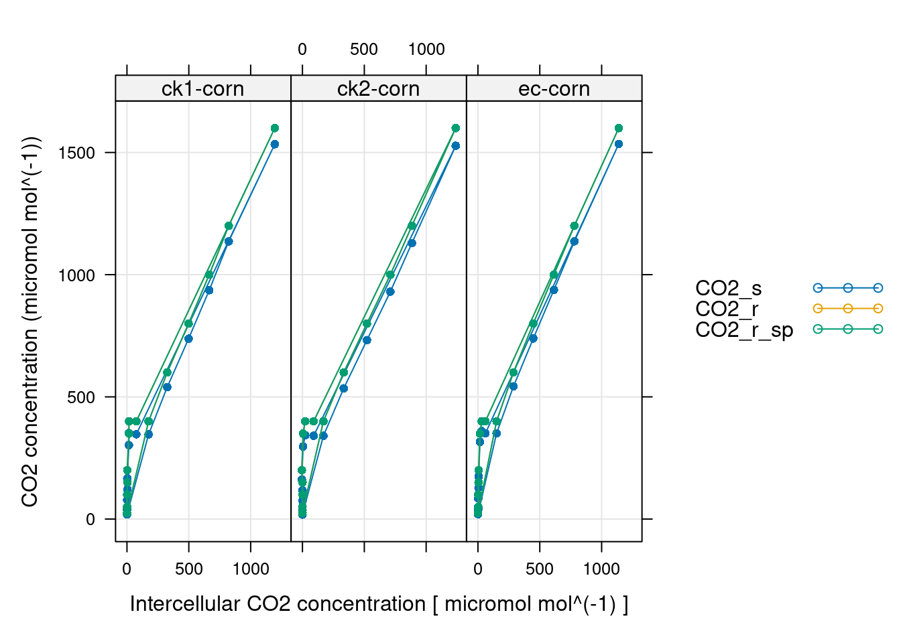
# 稳定性参数，我觉得一通常不需要检查
# 而且不同仪器参数设置不同，我跳过
# xyplot(
# `A:OK` + `gsw:OK` + Stable ~ Ci | curve_identifier,
# data = licor_data$main_data,
# type = 'b',
# pch = 16,
# auto = TRUE,
# grid = TRUE,
# xlab = paste('Intercellular CO2 concentration [', licor_data$units$Ci, ']')
# )
# 数据清洗，如果正常测量，一半无需该步骤
# # Only keep points where stability was achieved
# licor_data <- licor_data[licor_data[, 'Stable'] == 2, , TRUE]
# # Remove any curves that have fewer than three remaining points
# npts <- by(licor_data, licor_data[, 'curve_identifier'], nrow)
# ids_to_keep <- names(npts[npts > 2])
# licor_data <- licor_data[licor_data[, 'curve_identifier'] %in% ids_to_keep, , TRUE]
# Remove points where `instrument` is `ripe1` and `CO2_r_sp` is 1800
# licor_data <- remove_points(
# licor_data,
# list(instrument = 'ripe1', CO2_r_sp = 1800)
# )
# 应用阿伦尼乌斯方程，计算温度相关参数
licor_data <- calculate_arrhenius(licor_data, c4_arrhenius_von_caemmerer)
# 覆盖默认的叶肉导度参数，并根据数据的
# newDef_0（名字根据自己的数据来确定）这一列来制定不同来源数据的值
# gmc = Inf 表示拟合确定，确定的数值表示自己有相关数据
licor_data <- set_variable(
licor_data, 'gmc',
id_column = 'newDef_0',
value_table = list(ec = 3.0, ck1 = Inf, ck2 = Inf)
)
# 总压强计算
licor_data <- calculate_total_pressure(licor_data)
# 计算分压 gm PCm
licor_data <- apply_gm(
licor_data,
'C4' # Indicate C4 photosynthesis
)
# Fit the C4 A-Ci curves
c4_aci_results <- consolidate(by(
licor_data, # The `exdf` object containing the curves
licor_data[, 'curve_identifier'], # A factor used to split `licor_data` into chunks
fit_c4_aci, # The function to apply to each chunk of `licor_data`
Ca_atmospheric = 420 # Additional argument passed to `fit_c4_aci`
))
# 拟合结果查看
xyplot(
A + A_fit ~ Ci | curve_identifier,
data = c4_aci_results$fits$main_data,
type = 'b',
pch = 16,
auto = TRUE,
grid = TRUE,
xlab = paste('Intercellular CO2 concentration [', c4_aci_results$fits$units$Ci, ']'),
ylab = paste('Net CO2 assimilation rate [', c4_aci_results$fits$units$A, ']')
)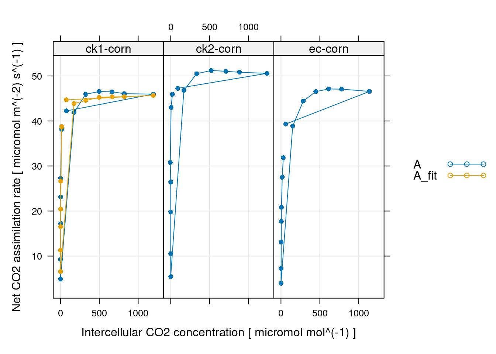
# Plot the C4 A-PCm fits (including limiting rates)
xyplot(
A + Apc + Ar + A_fit ~ PCm | curve_identifier,
data = c4_aci_results$fits$main_data,
type = 'b',
auto.key = list(space = 'right'),
grid = TRUE,
xlab = paste('Mesophyll CO2 pressure [', c4_aci_results$fits$units$PCm, ']'),
ylab = paste('Net CO2 assimilation rate [', c4_aci_results$fits$units$A, ']'),
par.settings = list(
superpose.line = list(col = multi_curve_line_colors()),
superpose.symbol = list(col = multi_curve_point_colors(), pch = 16)
),
curve_ids = c4_aci_results$fits[, 'curve_identifier'],
panel = function(...) {
panel.xyplot(...)
args <- list(...)
curve_id <- args$curve_ids[args$subscripts][1]
fit_param <-
c4_aci_results$parameters[c4_aci_results$parameters[, 'curve_identifier'] == curve_id, ]
panel.points(
fit_param$operating_An_model ~ fit_param$operating_PCm,
type = 'p',
col = 'black',
pch = 1
)
}
)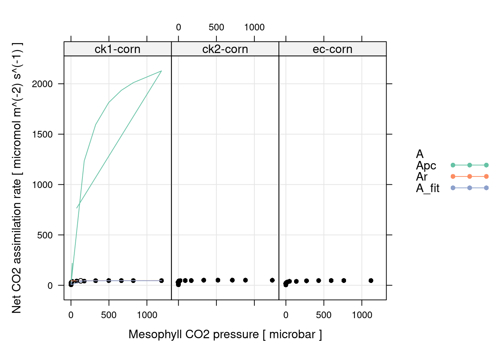
# 通过残差检查拟合结果：
# 残差要足够小，并且没有明显的趋势才合理
xyplot(
A_residuals ~ Ci | curve_identifier,
data = c4_aci_results$fits$main_data,
type = 'b',
pch = 16,
grid = TRUE,
xlab = paste('Intercellular CO2 concentration [', c4_aci_results$fits$units$Ci, ']'),
ylab = paste('Assimilation rate residual (measured - fitted)\n[', c4_aci_results$fits$units$A, ']')
)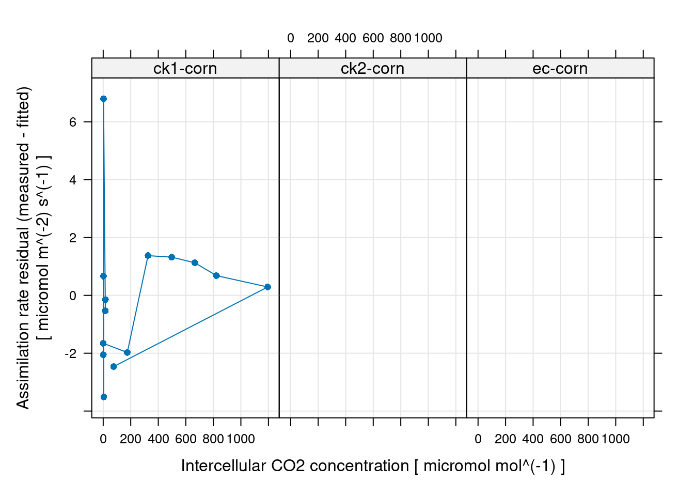
# 检查拟合结果：
# Make a barchart showing average Vpmax values
barchart_with_errorbars(
c4_aci_results$parameters[, 'Vpmax_at_25'],
c4_aci_results$parameters[, 'newDef_0'],
ylim = c(0, 1500),
xlab = 'newDef_0',
ylab = paste('Vpmax at 25 degrees C [', c4_aci_results$parameters$units$Vpmax_at_25, ']')
)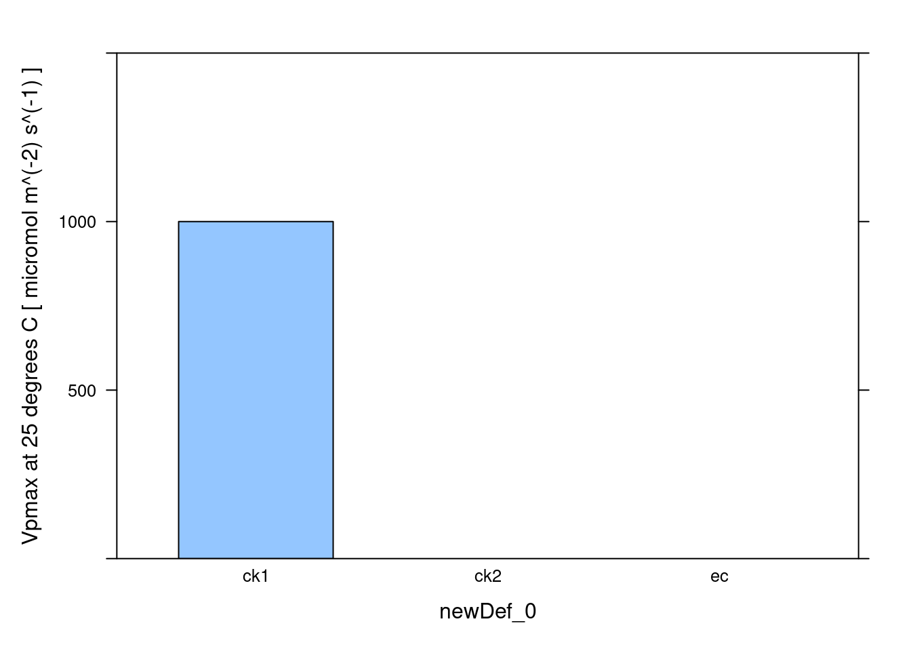
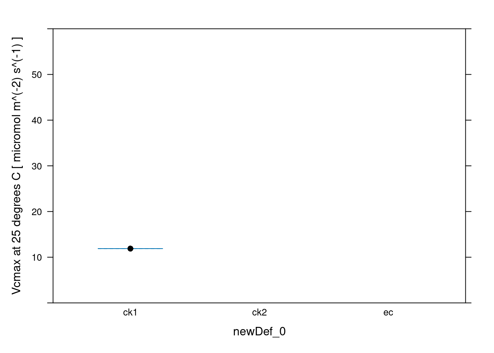
newDef_0 [UserDefCon] (NA) Rd_at_25 [fit_c4_aci] (micromol m^(-2) s^(-1))
1 ck1 0.07110684
2 ck2 NA
3 ec NA
Vcmax_at_25 [fit_c4_aci] (micromol m^(-2) s^(-1))
1 11.88785
2 NA
3 NA
Vpmax_at_25 [fit_c4_aci] (micromol m^(-2) s^(-1))
1 1000
2 NA
3 NA## 如果是同一处理，那么可以将数据进行平均值
# 这里明显不是，我就不需要了
# c4_aci_averages <- basic_stats(c4_aci_results$parameters, 'newDef_0')
# # View the averages and errors
# columns_to_view <- c(
# 'newDef_0',
# 'Rd_at_25_avg', 'Rd_at_25_stderr',
# 'Vcmax_at_25_avg', 'Vcmax_at_25_stderr',
# 'Vpmax_at_25_avg', 'Vpmax_at_25_stderr'
# )
# print(c4_aci_averages[ , columns_to_view, TRUE])上面是针对一个文件夹的数据的测试，下面是针对单个数据文件进行的测试：
library(PhotoGEA)
library(lattice) # 快速作图查看数据的依赖
# 导入数据，时间戳使用'time'，非必须
df = read_gasex_file('data/PhotoGEA.xlsx', 'time')
# 阿伦尼乌斯方程计算 C4 photosynthetic 参数
df = calculate_arrhenius(df, c4_arrhenius_von_caemmerer)
# 计算总的压强 bar
df <- calculate_total_pressure(df)
# 指定叶肉导度，如未知，则是 inf
df <- set_variable(
df, 'gmc',
value = Inf
)
# 计算叶肉 分压 PCm
df <- apply_gm(
df,
'C4' # Indicate C4 photosynthesis
)
# 拟合
c4_fit = fit_c4_aci(df, Ca_atmospheric = 400)
# 提取要查看的参数列
columns_for_viewing <-
c('Rd_at_25', 'Vcmax_at_25', 'Vpmax_at_25')
# 查看参数结果
c4_fit_parameters <-
c4_fit$parameters[ , columns_for_viewing, TRUE]
print(c4_fit_parameters) Rd_at_25 [fit_c4_aci] (micromol m^(-2) s^(-1))
1 10.58733
Vcmax_at_25 [fit_c4_aci] (micromol m^(-2) s^(-1))
1 53.58885
Vpmax_at_25 [fit_c4_aci] (micromol m^(-2) s^(-1))
1 186.3173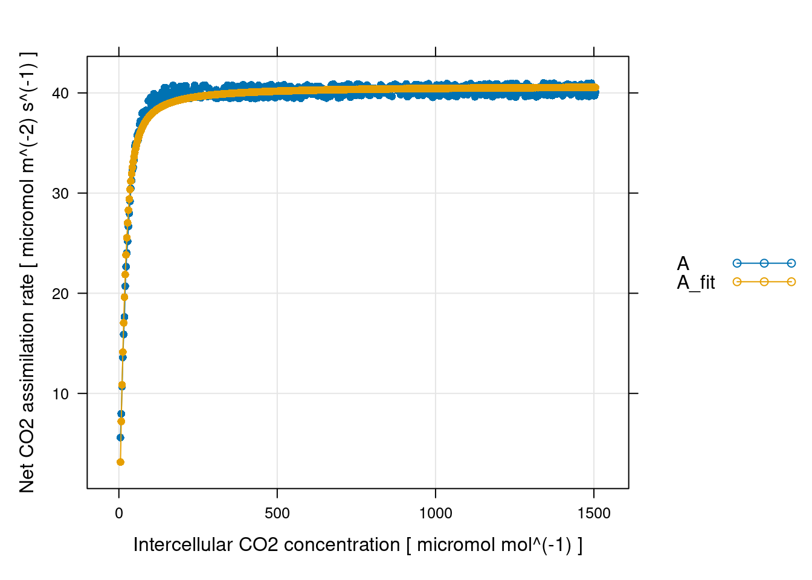
# Plot the C4 A-PCm fits (including limiting rates)
xyplot(
A + Apc + Ar +A_fit ~ PCm,
data = c4_fit$fits$main_data,
type = 'l',
auto.key = list(space = 'right'),
grid = TRUE,
xlab = paste('Mesophyll CO2 pressure [', c4_fit$fits$units$PCm, ']'),
ylab = paste('Net CO2 assimilation rate [', c4_fit$fits$units$A, ']'),
par.settings = list(
superpose.line = list(col = multi_curve_colors()),
superpose.symbol = list(col = multi_curve_colors())
)
)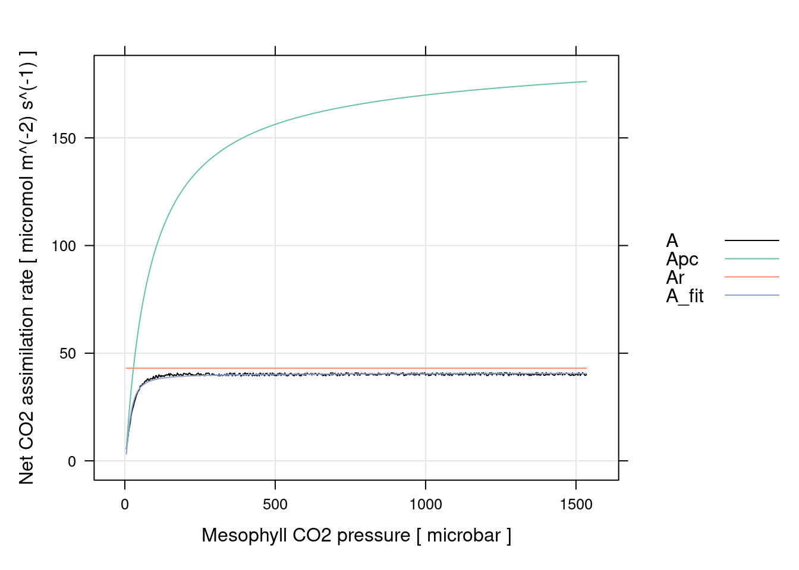
下面的链接有手动实现：

这里不再赘述。